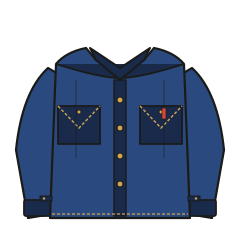

— Chapter 03-3 · Items
Gジャンの、3世代。
「デニムジャケット」と、日本語の「Gジャン」は同じものです。 Gは、GI（アメリカ兵）でも、Genoaでもなく—— Jean Jacketの頭文字です。 Levi'sは過去3回、この型を大きく作り直しました。

Type I — 506XX（1936〜1952）
最初期のGジャンは、506XX。通称ファースト。 胸ポケットは左胸に1つだけ、 背中にベルト状のシンチバックが付いた、 もっともワーク色の強いモデルです。
| 胸ポケット | 左胸に1つ、プリーツ（ひだ）付き |
|---|---|
| 背面 | シンチバック（サイズ調整金具） |
| フロント | ドーナツボタン（Levi's刻印） |
| 現行復刻 | LVC（Levi's Vintage Clothing）の定番 |
Type II — 507XX（1953〜1961）
戦後の改訂版507XX、通称セカンド。 胸ポケットが左右対称に2つになり、 シンチバックは廃止されて両サイドのボタン留めアジャスターへ。
生産期間が短く（8年）、現存数が少ないため、 ヴィンテージ市場ではもっとも高値で取引される型です。
Type III — 557XX / 70505（1962〜現在）
現代もっとも見かけるType III、通称サード。 1962年発売の557XXに始まり、 1967年のマイナーチェンジで70505となり、 現在のTrucker Jacketに直接つながっています。
| 胸ポケット | 左右対称に2つ、プリーツなしの三角シェイプ |
|---|---|
| シルエット | 上がV字に絞られた、戦後のスマートな形 |
| アジャスター | 裾両サイドのボタン式 |
| 型番 | 557XX → 70505-0217（デッドストック名称）→ Trucker |

カナディアンタキシード問題
上下同じ青のデニムで揃えてしまうことを、 英語圏では皮肉を込めて「Canadian Tuxedo」と呼びます。 由来は1951年、トロントのホテルがジーンズ姿のビング・クロスビーの宿泊を断った「事件」。 彼への詫びに、Levi'sが全身デニムのタキシードを製作しました。
モードの文脈ではあえて濃淡差をゼロにする手法もありますが、 大人の日常着としては、上と下で色の濃淡を必ず変えるのが無難です。
サイズの選び方
| ジャストサイズ | Tシャツが下に入る程度。シャツ・ニットは無理。現代的 |
|---|---|
| ワンオーバー | シャツ1枚が下に入る。Type IIの王道サイズ感 |
| オーバーサイズ | ニットやパーカーも下に。90'sリバイバル。若い世代向け |